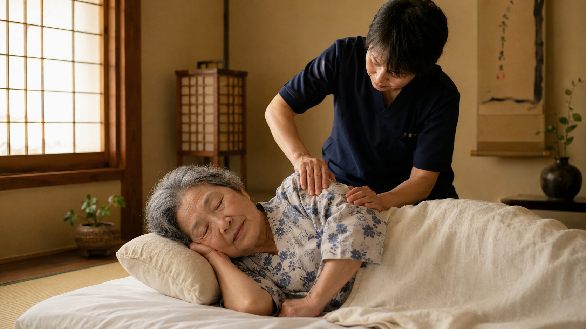

痛みを取る、
その先まで。
八王子・町田・日野で、医療保険でうかがう訪問鍼灸マッサージ＋リハビリのチーム。
通院が難しくなった方のご自宅へ、国家資格者が直接お伺いします。痛みを和らげるだけでなく、その先の生活全体に向き合います。
受付：平日 9:00〜18:00（日祝休）／所在地：八王子市下柚木3-7-2-401

痛みを取る、その先にあるもの
85歳のMさん（仮名）。
いろいろ試しても変わらなかった、
長年悩まされていた腰の痛み。
施術を続けるうち、痛みは和らぎ、外を歩けるようになりました。
そこから先、Mさんに必要だったのは、
痛みを取ることだけではありませんでした。
- 動ける身体を保つ筋力強化と歩行訓練
- 「また痛くなるのでは」という不安への対話
- 転倒したら誰にどう連絡するかの備え
- 服薬の組み合わせについて、医師への相談を一緒に整理
- 夜の眠り、食事、生活リズムのご相談
施術しながら、生活全体に向き合う。
これが、私たちが続けてきた30分の中身です。
※個別のご利用者様の体験の一例です。
こんなお悩みから始められます
これまで通り通院ができない
足腰の痛みや移動の負担から、外へ出ることが難しくなった方のケアを継続します。
自宅の生活環境でケアを受けたい
生活空間の中で施術を行うことで、ご自宅での生活適応を支援します。
訪問鍼灸マッサージで対応している主な症状
南大沢・町田・八王子などの各エリアで、以下の症状でお困りの方にご利用いただいています。
30分の施術の中で、何が起きているか。
お一人おひとりの状態に合わせて、4つのアプローチを組み合わせます。
鍼治療
こり・痛み・しびれにアプローチ。髪の毛ほどの細さで、痛みのない施術。
お灸
温熱で血流を促し、冷えやこわばりを和らげます。
マッサージ
こり固まった筋肉をほぐし、可動域を取り戻します。
機能訓練・リハビリ
関節可動域・筋力・歩行訓練でADL維持／脳梗塞後の機能回復。
お一人おひとりに合わせて、4つを組み合わせ、
痛みや機能低下のその先までお付き合いします。
料金は、透明に。
医療保険適用。出張・交通費はすべて料金に含みます。
| 医療保険 1割負担 | 450円 |
| 医療保険 2割負担 | 867円 |
| 医療保険 3割負担 | 1,284円 |
| 生活保護 | 無料 |
| ○障（重度心身障害者医療費助成） | 無料 |
医療保険適用には医師の同意書が必要です。同意書取得もこちらでサポートします。
介護連携へのスムーズな橋渡し
訪問支援を行っている間に、介護保険証が必要になるタイミングや、生活環境の見直しが必要になるタイミングが訪れることがあります。 私たちは単に施術をするだけでなく、社内のケアマネジャーと連携し、必要な制度の活用へと自然に繋げることができます。

ケアマネ・地域包括・施設の皆さまへ
こんな利用者様、いらっしゃいませんか？
☑ 慢性的な腰の痛み
玄関までで諦めていた方が、近くのスーパーまで歩けるように
☑ 服を着るのも一苦労の五十肩
朝の身支度、夜の眠り。日常の動作が戻ります
☑「階段が下りられない」膝の痛み
畳に正座、外出の時間が増えます
☑ 退院後のリハ継続先がない脳梗塞後遺症
家まで通うリハ。歩行が一歩ずつ安定します
ご紹介の流れ
お電話でご相談
症状・お住まい・ご希望日時
訪問日時の調整
医師の同意書取得もこちらでサポート
初回の施術
継続の判断は無理なく
ケアマネ・包括・施設のスタッフ様向け 無料体験施術
ご紹介前に、ご自身で施術をお確かめいただけます。事業所・施設へのご訪問／合同体験会形式の2通りで実施。詳細は下記の電話番号にて。
関連するサービス・解決策
訪問施術・マッサージのご相談
ご本人だけでなく、通院の付き添いが難しくなってきたご家族からのご相談も承ります。
身体状態や生活環境を踏まえて訪問利用のイメージをご案内いたします。